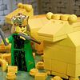

|
|
|
1 Kings 12
|
|
| 12:1
And Rehoboam went to Shechem: for all Israel were come to Shechem to make
him king. |
|
| 12:2
And it came to pass, when Jeroboam the son of Nebat, who was yet in Egypt,
heard of it, (for he was fled from the presence of king Solomon, and
Jeroboam dwelt in Egypt;) |
|
| 12:3
That they sent and called him. And Jeroboam and all the congregation of
Israel came, and spake unto Rehoboam, saying, |
|
| 12:4
Thy father made our yoke grievous: now therefore make thou the grievous
service of thy father, and his heavy yoke which he put upon us, lighter, and
we will serve thee. |
|
| 12:5
And he said unto them, Depart yet for three days, then come again to me.
And the people departed. |
|
| 12:6
And king Rehoboam consulted with the old men, that stood before Solomon
his father while he yet lived, and said, How do ye advise that I may answer
this people? |
|
| 12:7
And they spake unto him, saying, If thou wilt be a servant unto this
people this day, and wilt serve them, and answer them, and speak good words
to them, then they will be thy servants for ever. |
|
| 12:8
But he forsook the counsel of the old men, which they had given him, and
consulted with the young men that were grown up with him, and which stood
before him: |
|
| 12:9
And he said unto them, What counsel give ye that we may answer this
people, who have spoken to me, saying, Make the yoke which thy father did
put upon us lighter? |
|
| 12:10
And the young men that were grown up with him spake unto him, saying, Thus
shalt thou speak unto this people that spake unto thee, saying, Thy father
made our yoke heavy, but make thou it lighter unto us; thus shalt thou say
unto them, My little finger shall be thicker than my father's loins. |
|
| 12:11
And now whereas my father did lade you with a heavy yoke, I will add to
your yoke: my father hath chastised you with whips, but I will chastise you
with scorpions. |
|
| 12:12
So Jeroboam and all the people came to Rehoboam the third day, as the king
had appointed, saying, Come to me again the third day. |
|
| 12:13
And the king answered the people roughly, and forsook the old men's
counsel that they gave him; |
|
| 12:14
And spake to them after the counsel of the young men, saying, My father
made your yoke heavy, and I will add to your yoke: my father also chastised
you with whips, but I will chastise you with scorpions. |
|
| 12:15
Wherefore the king hearkened not unto the people; for the cause was from
the LORD, that he might perform his saying, which the LORD spake by Ahijah
the Shilonite unto Jeroboam the son of Nebat. |
|
| 12:16
So when all Israel saw that the king hearkened not unto them, the people
answered the king, saying, What portion have we in David? neither have we
inheritance in the son of Jesse: to your tents, O Israel: now see to thine
own house, David. So Israel departed unto their tents. |
|
| 12:17
But as for the children of Israel which dwelt in the cities of Judah,
Rehoboam reigned over them. |
|
| 12:18
Then king Rehoboam sent Adoram, who was over the tribute; and all Israel
stoned him with stones, that he died. Therefore king Rehoboam made speed to
get him up to his chariot, to flee to Jerusalem. |
|
| 12:19
So Israel rebelled against the house of David unto this day. |
|
| 12:20
And it came to pass, when all Israel heard that Jeroboam was come again,
that they sent and called him unto the congregation, and made him king over
all Israel: there was none that followed the house of David, but the tribe
of Judah only. |
The Golden Calves
|
| 12:21
And when Rehoboam was come to Jerusalem, he assembled all the house of
Judah, with the tribe of Benjamin, an hundred and fourscore thousand chosen
men, which were warriors, to fight against the house of Israel, to bring the
kingdom again to Rehoboam the son of Solomon.
|
| 12:22
But the word of God came unto Shemaiah the man of God, saying, |
|
| 12:23
Speak unto Rehoboam, the son of Solomon, king of Judah, and unto all the
house of Judah and Benjamin, and to the remnant of the people, saying, |
|
| 12:24
Thus saith the LORD, Ye shall not go up, nor fight against your brethren
the children of Israel: return every man to his house; for this thing is
from me. They hearkened therefore to the word of the LORD, and returned to
depart, according to the word of the LORD. |
|
| 12:25
Then Jeroboam built Shechem in mount Ephraim, and dwelt therein; and went
out from thence, and built Penuel. |
|
| 12:26
And Jeroboam said in his heart, Now shall the kingdom return to the house
of David: |
|
| 12:27
If this people go up to do sacrifice in the house of the LORD at
Jerusalem, then shall the heart of this people turn again unto their lord,
even unto Rehoboam king of Judah, and they shall kill me, and go again to
Rehoboam king of Judah. |
|
| 12:28
Whereupon the king took counsel, and made two calves of gold, and said
unto them, It is too much for you to go up to Jerusalem: behold thy gods, O
Israel, which brought thee up out of the land of Egypt. |
 (12:28) "The king took counsel, and made two calves of gold, and said
unto them ... behold thy gods, O Israel, which brought thee up out of the land of Egypt." (12:28) "The king took counsel, and made two calves of gold, and said
unto them ... behold thy gods, O Israel, which brought thee up out of the land of Egypt."
|
| 12:29
And he set the one in Bethel, and the other put he in Dan. |
|
| 12:30
And this thing became a sin: for the people went to worship before the
one, even unto Dan. |
(12:30) "And this thing became a sin."
|
| 12:31
And he made an house of high places, and made priests of the lowest of the
people, which were not of the sons of Levi. |
|
| 12:32
And Jeroboam ordained a feast in the eighth month, on the fifteenth day of
the month, like unto the feast that is in Judah, and he offered upon the
altar. So did he in Bethel, sacrificing unto the calves that he had made:
and he placed in Bethel the priests of the high places which he had made. |
|
| 12:33
So he offered upon the altar which he had made in Bethel the fifteenth day
of the eighth month, even in the month which he had devised of his own
heart; and ordained a feast unto the children of Israel: and he offered upon
the altar, and burnt incense.
|
|
|